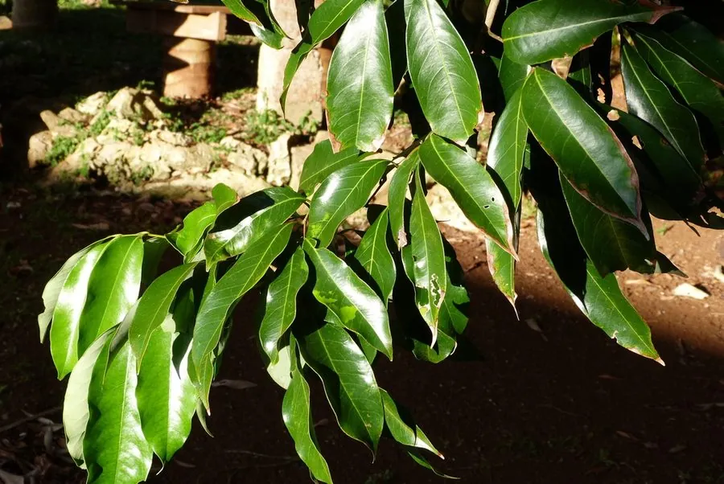

乔木 · 植物界
荔枝 Litchi chinensis

中国南方著名的热带水果，夏季果实鲜红、果肉晶莹多汁，栽培历史逾两千年，有“岭南佳果”之称。
- 分类
- 门被子植物门纲木兰纲目无患子目科无患子科属荔枝属
- 栖息环境
- 海拔 500 米以下的热带亚热带丘陵与平原，喜高温多湿，不耐寒
- 地理分布
- 中国广东、广西、福建、海南、四川等地，东南亚也有栽培
- 保护级别
- 暂无评估；中国未列入国家重点保护野生植物名录
物种志
荔枝为常绿乔木，高可达 20 m，树皮灰褐色；偶数羽状复叶，小叶 2–4 对，长椭圆形至披针形，革质光亮。花期 3–4 月，圆锥花序顶生，花小、绿白色；果实为核果，近球形或卵圆形，直径 2–3.5 cm，果皮具瘤状突起，成熟时鲜红或紫红色，果肉白色半透明、多汁，包裹着黑褐色种子。
荔枝原产中国南部，广东、广西、福建、海南、四川等地栽培最盛，喜高温多湿、光照充足，适宜深厚肥沃、排水良好的酸性土壤，不耐寒。栽培历史逾两千年，唐代“一骑红尘妃子笑，无人知是荔枝来”的典故流传至今；品种众多，如妃子笑、桂味、糯米糍等，风味各异。果肉可鲜食、制干、酿酒与做罐头；果皮可提取色素，根与核可入药。荔枝不耐贮运，有“一日色变、二日香变、三日味变”之说。
形态与习性
- 株高可达 20 m，树皮灰褐色
- 花期3–4 月，圆锥花序顶生
- 果期6–7 月，果皮鲜红色
- 光照喜光，不耐长期荫蔽
- 水分喜湿润，花期忌连阴雨
- 土壤深厚肥沃的酸性壤土
- 主要用途鲜食水果、制干酿酒、果皮提取色素、根核入药
趣味知识
- 荔枝有“一日色变、二日香变、三日味变”的说法，采摘后极不耐贮运。
- “一骑红尘妃子笑，无人知是荔枝来”写的就是唐代快马运送荔枝的典故。
- 荔枝果皮上的瘤状突起因品种而异，是辨认不同荔枝品种的特征之一。
- 中国栽培荔枝已有两千多年历史，广东、广西是主产区，品种超过 200 个。